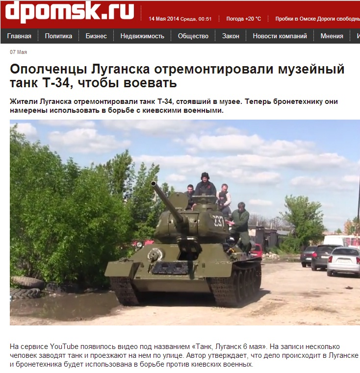
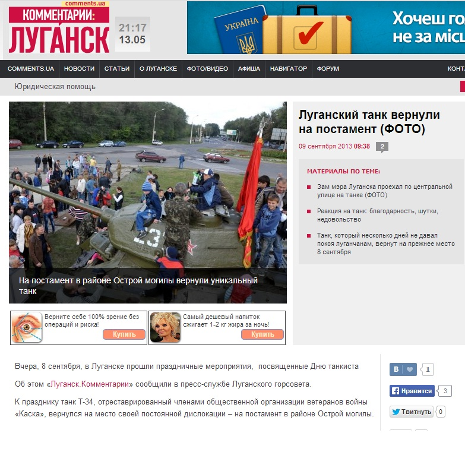
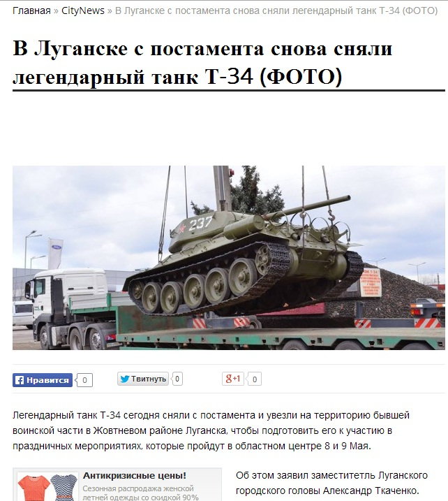
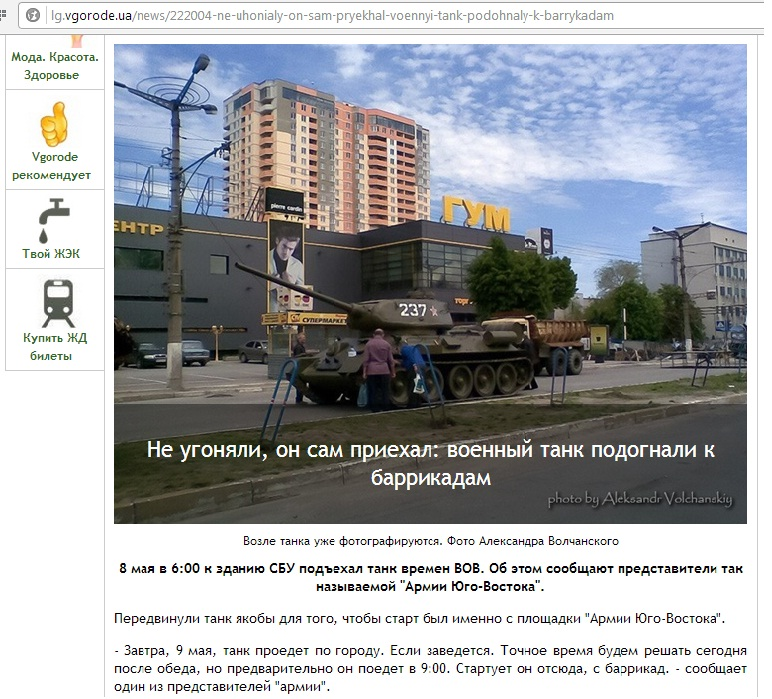
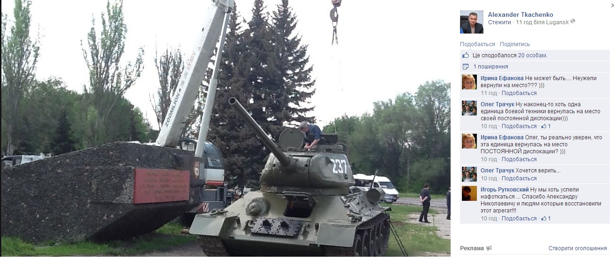

Ложь: Ополченцы Луганска отремонтировали музейный танк Т-34, чтобы воевать
На сервисе YouTube появилось видео под названием «Танк, Луганск 6 мая».На записи несколько человек заводят танк и проезжают на нем по улице.Автор утверждает, что дело происходит в Луганске и бронетехника будет использована сепаратистами в борьбе против киевских военных.


Танк имеет бортовой номер 237, на башне нарисована красная звезда – символ советской армии.
«Легендарный танк, времен ВОВ, который стоял на постаменте в районе «Острой могилы» в Луганске.Танк отремонтирован.Танк времен Великой Отечественной войны — вновь на ходу!Спасибо Саше Ткаченко [заместитель Луганского городского головы Александр Ткаченко — Stopfake.org] и тем людям, которые восстановили танк и подарили ему вторую жизнь», — пишет автор видео.
Ссылка на это видео появилась в националистическом паблике вКонтакте «Спутник и погром», сейчас оно набрало уже более 120 тысяч просмотров.
Кроме этого, о танке, который сепаратисты якобы отремонтировали своими силами, чтобы воевать, написало несколько сайтов.

Однако на самом деле на видео снят танк, который отремонтировали в 2013 году на средства общественной организации ветеранов войны «Каска» под руководством Александра Акулова под патронатом Луганского городского головы Сергея Кравченко.Тогда городская власть выступила с инициативой отреставрировать боевую технику «с целью сохранения исторического наследия и передачи памяти о великом подвиге солдат в годы Великой Отечественной войны».По завершению работ танк завели и поставили на ход, и он принял участие в праздновании 70-летия освобождения Луганской области от немецко-фашистских захватчиков, после чего его вернули на постамент к Дню танкиста.
Тогда же реставраторы рассказали, что танк на ходу, но боевая часть находится в нерабочем состоянии.То есть стрелять из башенного орудия нельзя.

В этом году перед праздником 9 мая местные власти снова решили снять танк с постамента, чтобы он мог принять участие в праздновании.К этому его подготовила все та же организация «Каска».Об этом заявил заместитель Луганского городского головы Александр Ткаченко.

8 мая в 6:00 танк подъехал к зданию областного управления СБУ в Луганской области.Об этом сообщили представители так называемой «Армии Юго-Востока».После этого и появилась информация о том, что они якобы угнали этот танк.Но танк лишь передвинули для того, чтобы старт был именно с этой площадки, сообщает портал lg.vgorode.ua со ссылкой на представителей «Армии Юго-Востока».
— Завтра, 9 мая, танк проедет по городу.Если заведется.Точное время будем решать сегодня после обеда, но предварительно он поедет в 9:00.Стартует он отсюда, с баррикад.— сообщил один из представителей «армии».
Таким образом, сепаратисты не ремонтировали танк, не смогут на нем воевать и даже не будут использовать его для прогулок, так как городские власти уже вернули танк на постамент.Об этом на своей странице в Фейсбук сообщил заместитель мэра Александр Ткаченко.«Танк вернулся на свое место.Дошел своим ходом», — написал он.
Также Ткаченко выложил видео, на котором видно, как этот танк едет по улице Оборонная в сопровождении милицейских машин по направлению к своему постаменту в районе «Острой Могилы».«Танк возвращается на место.Скорость впечатляет… Мастера полковника Акулова потрудились на славу!»— написал он.
Posted On: 2014-05-12T21:00:00
Content Date: 2014-05-12
Download Date: 2021-07-16
Document ID: L0C04FBUW